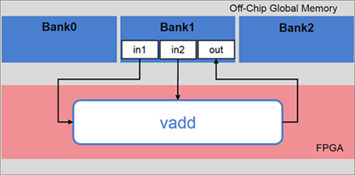
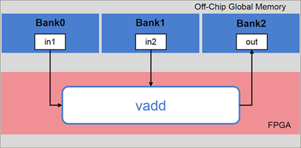
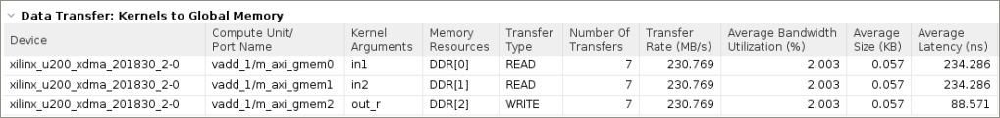

2020.1 Vitis™ Application Acceleration Development Flow TutorialsSee 2020.1 Vitis Application Acceleration Development Flow Tutorials |
Using Multiple DDR Banks¶
Introduction¶
By default, in the Vitis™ core development kit, the data transfer between the kernel and the DDR is achieved using a single DDR bank. In some applications, data movement is a performance bottleneck. In cases where the kernels need to move large amounts of data between the global memory (DDR) and the FPGA, you can use multiple DDR banks. This enables the kernels to access multiple memory banks simultaneously. As a result, the application performance increases.
The System Port mapping option using the v++ command --sp switch allows the designer to map kernel ports to specific global memory banks, such as DDR or PLRAM. This tutorial shows you how to map kernel ports to multiple DDR banks.
Tutorial Overview¶
This tutorial uses a simple example of vector addition. It shows the vadd kernel reading data from in1 and in2 and producing the result, out.
In this tutorial, you implement the vector addition application using three DDR banks.
Because the default behavior of the Vitis core development kit is to use a single DDR bank for data exchange between kernels and global memory, all data access through ports in1, in2, and out will be done through the default DDR bank for the platform.

Assume that in the application, you want to access:
in1throughBank0in2throughBank1outthroughBank2

To achieve the desired mapping, instruct the Vitis core development kit to connect each kernel argument to the desired bank.
The example in this tutorial uses a C++ kernel; however, the steps described are also the same for RTL and OpenCL™ API kernels.
Before You Begin¶
The labs in this tutorial use:
BASH Linux shell commands.
2020.1 Vitis core development kit release and the xilinx_u200_xdma_201830_2 platform. If necessary, it can be easily extended to other versions and platforms.
IMPORTANT:
Before running any of the examples, make sure you have installed the Vitis core development kit as described in Installation in the Application Acceleration Development flow of the Vitis Unified Software Platform Documentation (UG1416).
If you run applications on Xilinx® Alveo™ Data Center accelerator cards, ensure the card and software drivers have been correctly installed by following the instructions on the Alveo Portfolio page.
Accessing the Tutorial Reference Files¶
To access the reference files, type the following into a terminal:
git clone https://github.com/Xilinx/Vitis-Tutorials.Navigate to the
mult-ddr-banksdirectory, and then access thereference-filesdirectory.
Tutorial Setup¶
To set up the Vitis core development kit, run the following commands.
#setup Xilinx Vitis tools, XILINX_VITIS and XILINX_VIVADO will be set in this step. source <VITIS install path>/settings64.sh. for example: source /opt/Xilinx/Vitis/2019.2/settings64.sh #Setup runtime. XILINX_XRT will be set in this step source /opt/xilinx/xrt/setup.sh
Execute the makefile to build the design for HW-Emulation.
cd reference-files make allMakefile Options Descriptions
MODE := hw_emu: Set the build configuration mode to HW EmulationPLATFORM := xilinx_u200_xdma_201830_2: Select the target platformKERNEL_SRC := src/vadd.cpp: List the kernel source filesHOST_SRC := src/host.cpp: List the host source files
As previously mentioned, the default implementation of the design uses a single DDR bank. Observe the messages in the Console view during the link step; you should see messages similar to the following.
ip_name: vadd Creating apsys_0.xml INFO: [CFGEN 83-2226] Inferring mapping for argument vadd_1.in1 to DDR[1] INFO: [CFGEN 83-2226] Inferring mapping for argument vadd_1.in2 to DDR[1] INFO: [CFGEN 83-2226] Inferring mapping for argument vadd_1.out to DDR[1]
This confirms the mapping is automatically inferred by the Vitis core development kit for each of the kernel arguments in the absence of explicit
--spoptions being specified.Run HW-Emulation by executing the makefile with the
checkoption.make check
After the simulation is complete, the following memory connections for the kernel data transfer are reported.
TEST PASSED INFO: [Vitis-EM 22] [Wall clock time: 22:51, Emulation time: 0.0569014 ms] Data transfer between kernel(s) and global memory(s) vadd_1:m_axi_gmem0-DDR[1] RD = 0.391 KB WR = 0.000 KB vadd_1:m_axi_gmem1-DDR[1] RD = 0.391 KB WR = 0.000 KB vadd_1:m_axi_gmem2-DDR[1] RD = 0.000 KB WR = 0.391 KB
Now, you will explore how the data transfers can be split across the following:
DDR Bank 0DDR Bank 1DDR Bank 2
Set v++ Linker Options¶
You will instruct the v++ Kernel Linker to connect the kernel arguments to the corresponding banks. Use the sp option to map kernel ports or kernel arguments.
Kernel args:
sp = <kernel_cu_name>.<kernel_arg>:<sptag>
<kernel_cu_name>: The compute unit (CU) based on the kernel name, followed by_andindex, starting from the value1. For example, the computer unit name of the vadd kernel will bevadd_1<kernel_arg>: The function argument of the CU. For the vadd kernel, the kernel argument can be found in thevadd.cppfile.<sptag>: Represents a memory resource available on the target platform. Valid sptag names include DDR and PLRAM. In this tutorial, targetDDR[0],DDR[1], andDDR[2]. You can also do ranges:<sptag>[min:max].
Define the
spcommand options for the vadd kernel and add this to the Makefile.The kernel instance name will be:
vadd_1. The arguments for the vadd kernel are specified in thevadd.cppfile. The kernel argument (in1,in2, andout) should be connected toDDR[0],DDR[1], andDDR[2]. Therefore, thespoptions should be:sp = vadd_1.in1:DDR[0] sp = vadd_1.in2:DDR[1] sp = vadd_1.out:DDR[2]
Argument
in1accesses DDR Bank0Argument
in2accesses DDR Bank1Argument
outaccesses DDR Bank2.
The three
spoptions are added inconnectivity.cfgfile and you need to modify the Makefile to use that config file.Open the Makefile and uncomment line 18 to add the config file into
v++linker options.Using config files is the new feature for the Vitis software platform. You can put options into different files and use
--configto specify them.After you have saved the changes, complete a clean build of the design in HW Emulation mode.
make clean make all
Again, observe the messages in the Console view during the link step; a message similar to the following displays.
ip_name: vadd Creating apsys_0.xml INFO: [CFGEN 83-0] Port Specs: INFO: [CFGEN 83-0] kernel: vadd_1, k_port: in1, sptag: DDR[0] INFO: [CFGEN 83-0] kernel: vadd_1, k_port: in2, sptag: DDR[1] INFO: [CFGEN 83-0] kernel: vadd_1, k_port: out, sptag: DDR[2] INFO: [CFGEN 83-2228] Creating mapping for argument vadd_1.in1 to DDR[0] for directive vadd_1.in1:DDR[0] INFO: [CFGEN 83-2228] Creating mapping for argument vadd_1.in2 to DDR[1] for directive vadd_1.in2:DDR[1] INFO: [CFGEN 83-2228] Creating mapping for argument vadd_1.out to DDR[2] for directive vadd_1.out:DDR[2]
This confirms that the Vitis core development kit has correctly mapped the kernel arguments to the specified DDR banks from the
--spoptions provided.Run HW-Emulation, and verify the correctness of the design.
make check
After the simulation is complete, you can see the memory connections for the kernel data transfer reported as follows.
TEST PASSED
INFO: [Vitis-EM 22] [Wall clock time: 23:15, Emulation time: 0.054906 ms] Data transfer between kernel(s) and global memory(s)
vadd_1:m_axi_gmem0-DDR[0] RD = 0.391 KB WR = 0.000 KB
vadd_1:m_axi_gmem1-DDR[1] RD = 0.391 KB WR = 0.000 KB
vadd_1:m_axi_gmem2-DDR[2] RD = 0.000 KB WR = 0.391 KB
You can also open the Profile Summary report, profile_summary.html and look at the Memory Resources in the Kernel to Global Memory section showing data transfers. You will see the DDR banks assigned to each of the kernel arguments along with the traffic on each of the interfaces during HW-Emulation.

Conclusion¶
This tutorial showed you how to change the default mapping of ports in1, in2, and out of kernel vadd from a single DDR bank to multiple DDR banks. You also learned how to:
Set
v++linker options using the--spswitch to bind kernel arguments to multiple DDR banks.Build the application, and verify DDR mapping.
Run HW-Emulation and observe the transfer rate and bandwidth utilization for each port.
Copyright© 2020 Xilinx